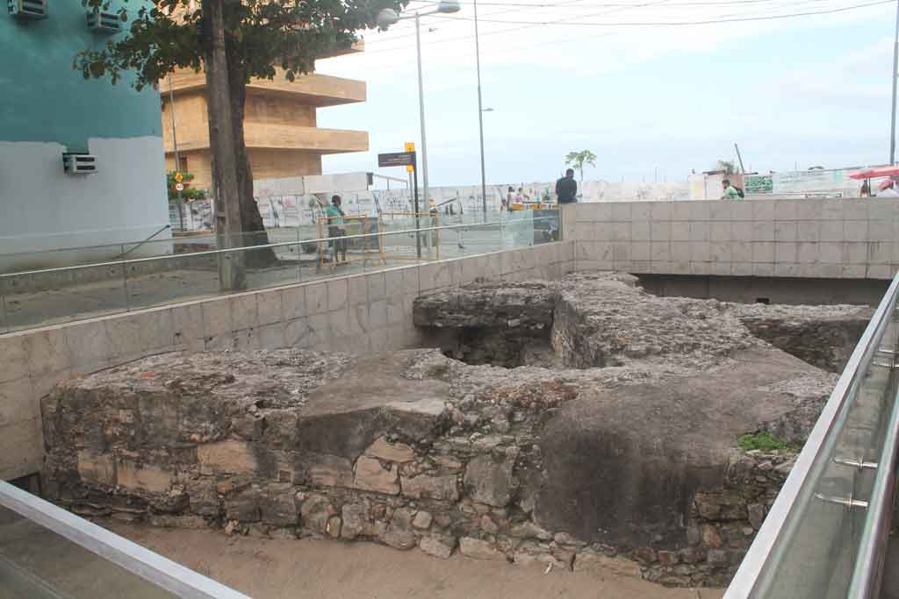

Pontos turísticos do Recife Antigo que valem a pena conhecer
Iniciaremos pelo Paço Alfândega
Navegue pelo conteúdo
Conheça também o Marco Zero
Paço Alfândega

O local já foi um convento e a alfândega do Recife, mas hoje em dia, depois de ser reformado e revitalizado, se tornou um pequeno shopping. Mas não pense que é um shopping qualquer, porque lá você vai ver uma estrutura sem igual com áreas originais reveladas, peças do ceramista Francisco Brennand e um terraço com vista panorâmica do Rio Capibaribe.
Rua do Bom Jesus

A Rua do Bom Jesus foi considerada uma das ruas mais bonitas do mundo. Além disso, ela é uma das ruas mais antigas do Recife. Por lá você vai encontrar alguns dos prédios mais importantes, portanto descubra a história do Recife Antigo a fundo.
Aos domingos, a Rua do Bom Jesus ganha uma feirinha típica com artesanato local, barraquinhas de comida, artesanato e música aos fins de tarde. A feirinha é bem familiar, as crianças aproveitam para brincar e os pais vão às compras ou relaxam num bar ou restaurante. Além disso, dá para fazer um lanche e experimentar algumas das comidas típicas de Pernambuco que são deliciosas.
Praça do Arsenal no Recife Antigo
A Praça do Arsenal da Marinha, a segunda mais importante da região do Recife Antigo, abriga diversos casarios antigos e coloridos. A praça foi criada pelo famoso paisagista Roberto Burle Marx, por isso é composta de palmeiras imperiais e uma fonte
Tem o Museu a Céu Aberto que é uma muralha de pedras do Arco do Bom Jesus e parte do dique de contenção do mar, achado da época dos Holandeses. Lá você ainda vai ver a Torre Malakoff, que serviu como observatório astronômico no passado, mas hoje está aberta para exposições.